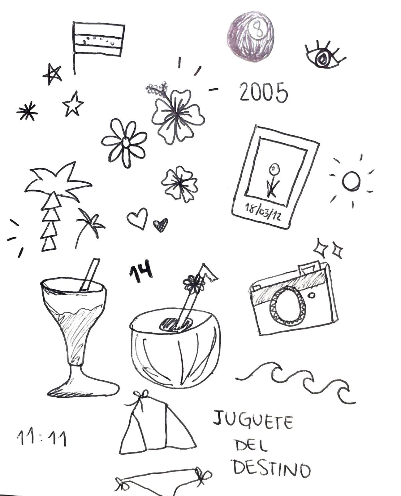
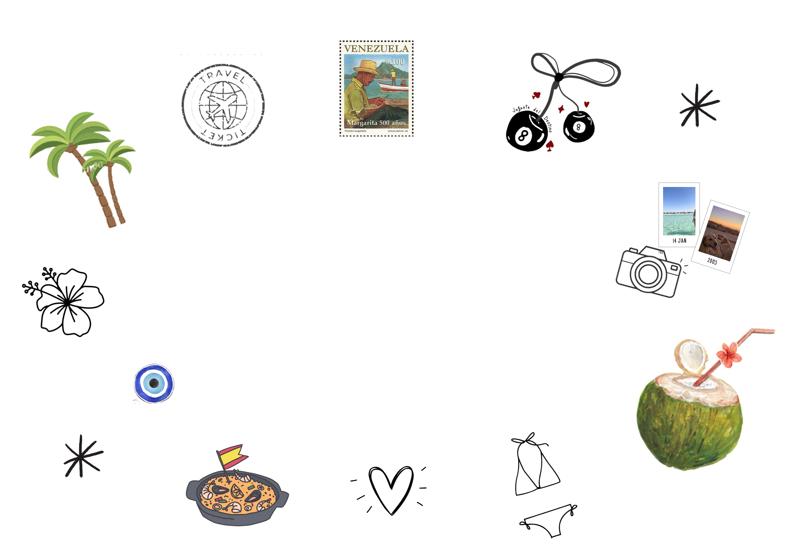
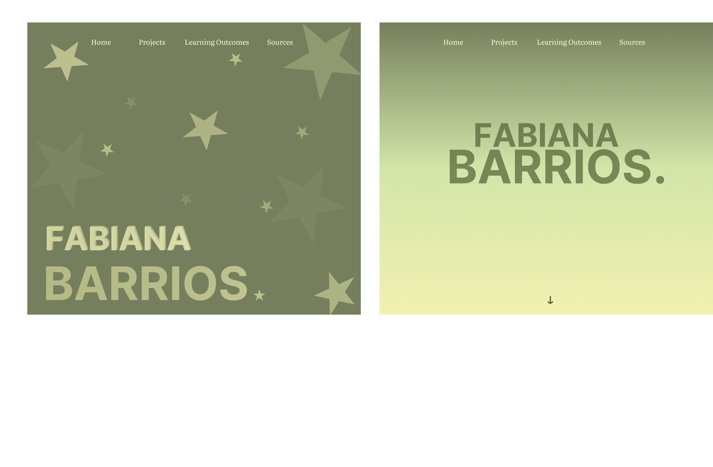

Portfolio
I started off by sketching some things that represent me and would give an insight on my personality without having to actually say it.
For the design of the website i used black and white as the main colors to ensure readability and create a timeless portfolio. I wanted to create a minimalistic website but also give it a personal touch, which is why i created the stickers for the cover page.
I considered Occams Razor principle of simplicity to choose my final design for the portfolio. He was a philosophist that stated that the simplest solution is usually the best, which is why i opted for this instead of the intial and loud designs.
Rather than multiple colors, i also chose a muted tone of green (#757F5D) for subtle emphasis.
I really like the final design of my portfolio and think it matches me as a person to some extent. However, in the future, I would like to explore more interactive elements to make the experience even more dynamic and immersive. This project reinforced intentional design and the importance of details.